★★★★★
Катя прекрасный мастер! Мои руки никогда не выглядели так красиво и аккуратно как с ней😍 Как мастер она просто чудо, отличный сервис, качественные работы и приятные презенты после каждого визита ❤️
ДЕМОНСТРАЦИЯ! НЕ ОФИЦИАЛЬНЫЙ САЙТ БИЗНЕСА
Екатеринбург · проспект Ленина 38А · 4 этаж
Буду рада познакомиться!
Кабинет маникюра в центре Екатеринбурга. Помогу подобрать форму и покрытие под ваши ногти – аккуратно, спокойно и с любовью к деталям.
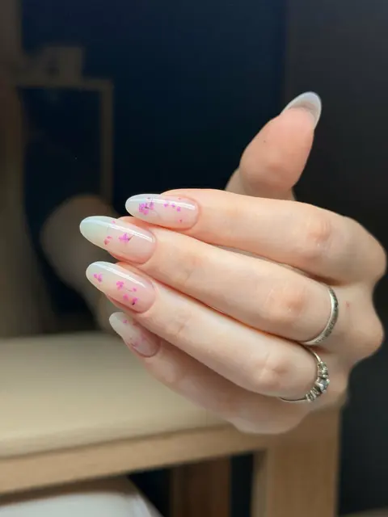
Меня зовут Катя, я мастер маникюра. Когда-то это было детское увлечение, а сейчас – дело, в котором я на своём месте и каждый день с удовольствием творю в своём кабинете.
Для меня маникюр – это больше, чем красивое покрытие. Мне важно, чтобы ногти радовали вас не только в день процедуры, но и спустя время: были крепкими, аккуратными и удобными каждый день. Поэтому я внимательно отношусь к подготовке ногтей, учитываю их особенности и подбираю технику под каждую клиентку.
Мой кабинет – небольшое уютное пространство, где можно выдохнуть. Пока я работаю, можно включить свой сериал, а к нему – вода или сок на выбор и конфетки. Время проходит незаметно, а уходите вы с ногтями, которыми хочется любоваться.
Маникюр, покрытие гель-лаком и наращивание – от лаконичного nude до дизайна, который захочется разглядывать. Вместе подберём форму, длину и цвет, а если хочется сохранить свои ногти и отрастить длину, подскажу, как к этому прийти.
Аккуратные ногти, которые держатся 4 недели, – то, к чему я стремлюсь в каждой работе.
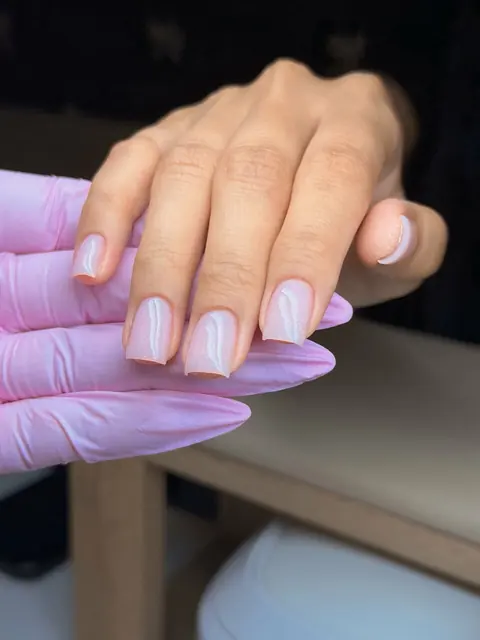
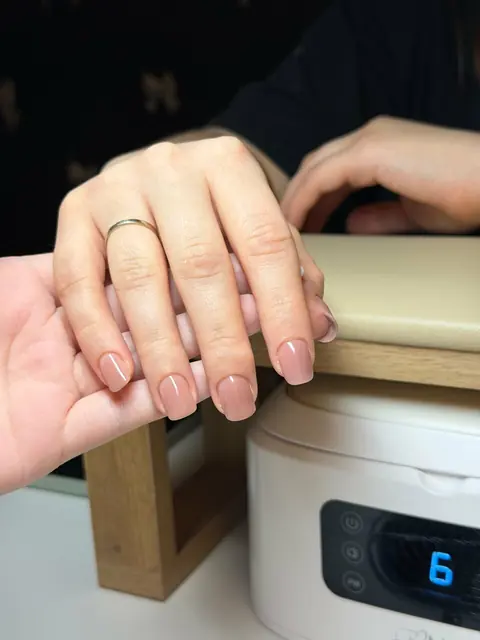
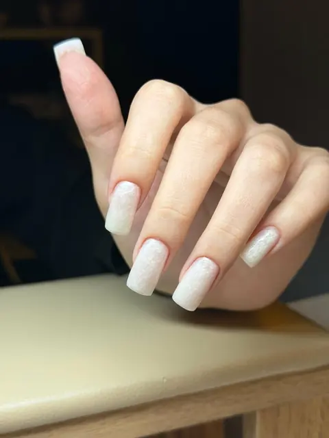
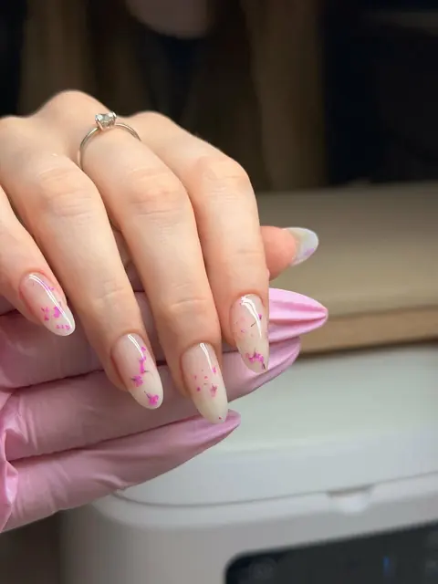
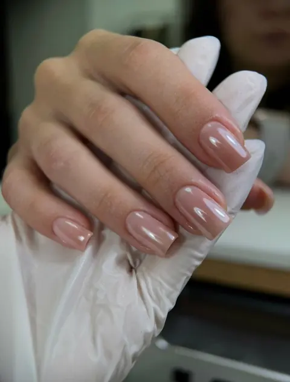
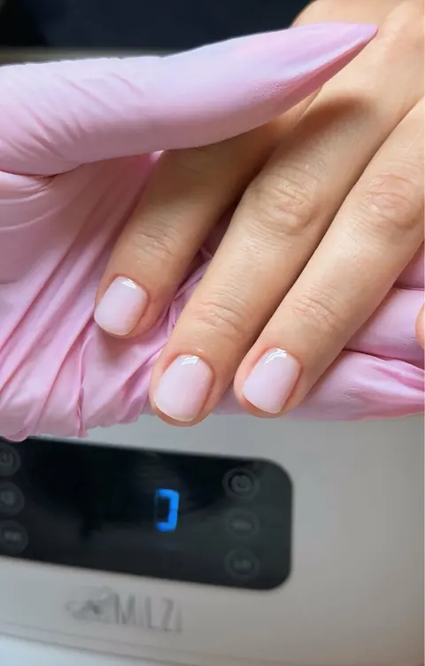
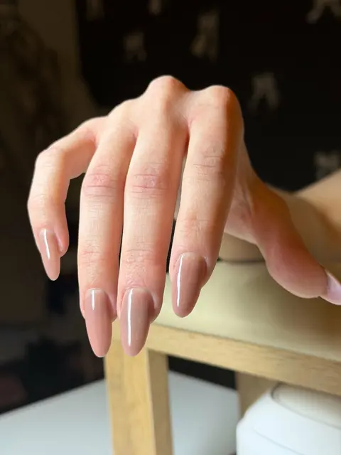
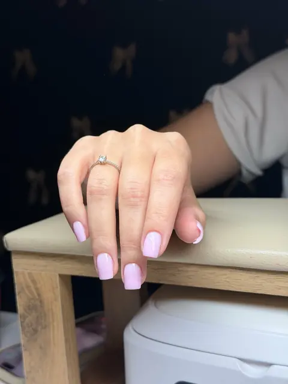
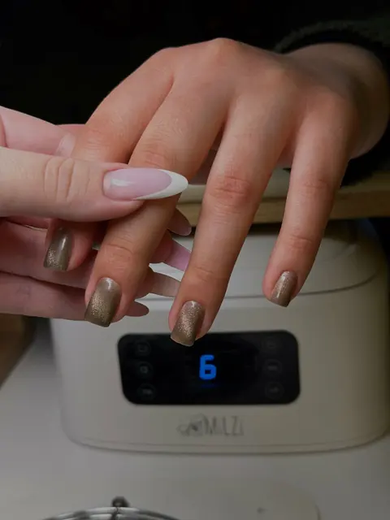
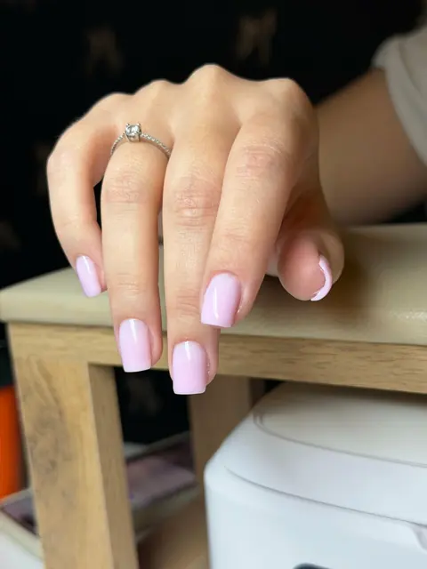
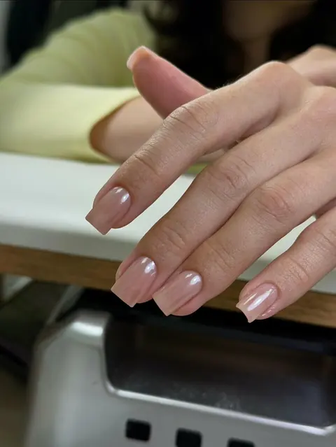
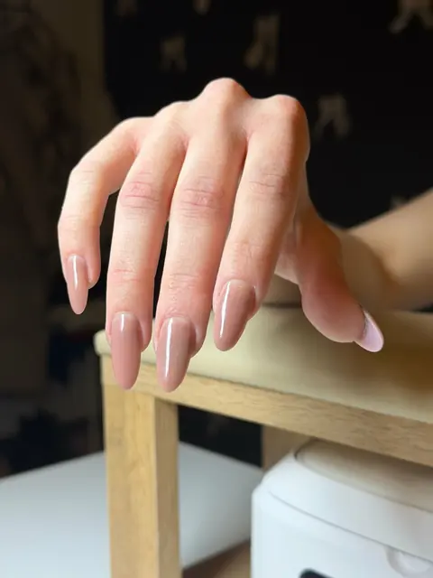
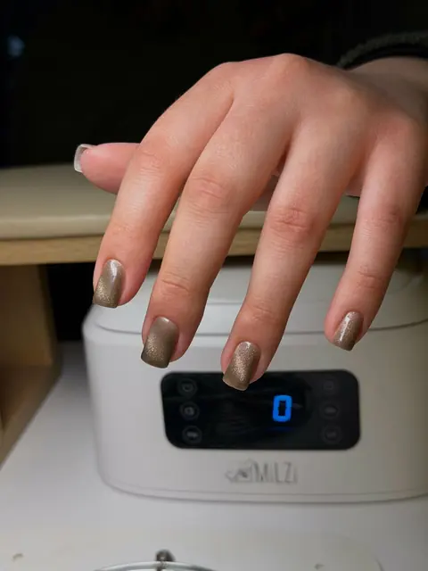
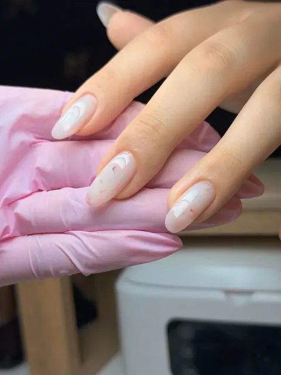
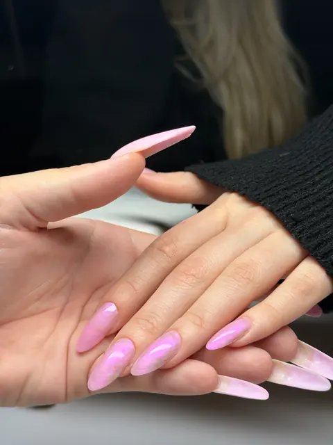
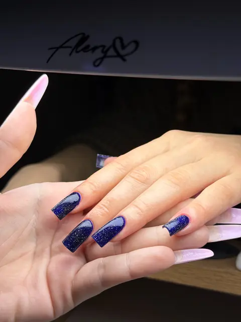
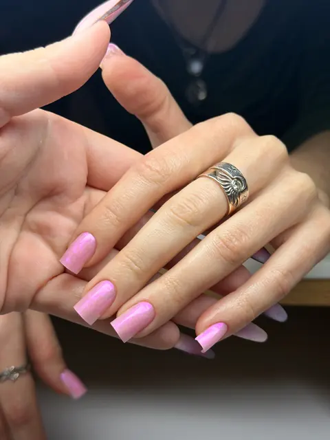
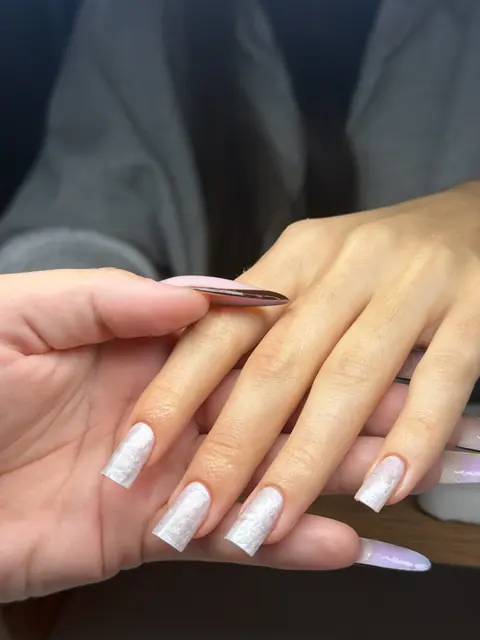
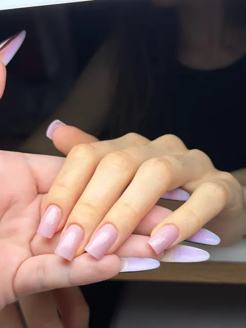
★★★★★
Катя прекрасный мастер! Мои руки никогда не выглядели так красиво и аккуратно как с ней😍 Как мастер она просто чудо, отличный сервис, качественные работы и приятные презенты после каждого визита ❤️
★★★★★
была впервые, атмосфера располагающая. маникюр качественный , красивый и полностью соответствует ожиданиям. Екатерина- замечательный мастер, с ней приятно и комфортно находиться, она все делает аккуратно и внимательно относится к пожеланиям😳
★★★★★
Катя замечательный мастер! Через её работу отражается настоящая любовь к своему делу. Мне очень понравилась работа и трепетное отношение ко мне. Была на процедуре первый раз и обязательно приду ещё. Спасибо за то, что глядя на мой маникюр, у меня каждый раз поднимается настроение😍❤️💅
★★★★★
Маникюр — огонь 🔥Идеальная форма, аккуратная кутикула, а еще приятная атмосфера под просмотр турецкого сериала. Цвет и дизайн — любовь с первого взгляда. Спасибо мастеру! Рекомендую 💅
★★★★★
Очень аккуратно, быстро, приятная атмосфера🥰 Рекомендую обязательно
★★★★★
Отличная атмосфера, отличная работа. Все аккуратно, это был мой второй визит, сделали наращивание (впервые у меня, и мне нравится результат!) Кабинет уютный, Екатерина - прекрасный и очень комфортный мастер. Рекомендую к посещению, замечаний вообще нет❤️
★★★★★
прекрасная девушка Екатерина, с первого посещения нашли общий язык) очень приятная в общении, время пролетело незаметно, было очень жаль расставаться. очень качественно и аккуратно сделала мне ноготочки, мне все нравится, третий день любуюсь какая красота
★★★★★
✨ Просто восторг! 😍 Стильно 😍 Спасибо за красоту и приятную атмосферу! 💅
★★★★★
Все очень понравилось, отличная работа, очень милая студия, мастер предложила воду или сок на выбор, а также конфетки. Индивидуальный подход, очень чувствуется что мастер старается сделать так, чтобы точно все понравилось. Рекомендую!☺️
★★★★★
Все супер! Получилось очень аккуратно, форма квадрат прям то, что я хотела. Делала не больно. Девушка приятная, предложила бутылочку воды и конфетки, включила мой сериал. Рекомендую))
Буду рада познакомиться! Выберите удобное окошко онлайн или напишите мне – подберём время вместе.
Проспект Ленина, 940 м от м. Площадь 1905 года. Кабинет на 4 этаже, в «Ленин-офисе».
Екатеринбург, проспект Ленина 38А, каб. 416, 4 этаж («Ленин-офис»)
Показать карту